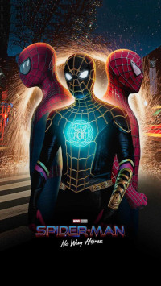

Introdução
Separei essa página para dar a minha bela opinião sobre as melhores produções da nossa querida Marvel, da pior para a melhor, tal opinião vai se basear unicamente nas chances de rever essas produções e claro, a minha afinidade com o personagem também vai influenciar bastante.

Filmes da saga Thanos
Aqui vou classificar todos os filmes referente a saga do Infinito, tendo como vilão o Titã louco Thanos.
Filmes pós Ultimato
Aqui vou classificar todos os filmes que ocorre após os eventos de Vingadores: Ultimato. Também vou indicar sua classificação geral em meio aos classificados acima.
01) - Homem Aranha: Sem volta para casa
02) - Shang-Chi e a lenda dos dez anéis
03) - Homem Aranha: Longe de casa
04) - Eternos
Séries
Aqui vou classificar todas as séries da Marvel lançadas no Disney+.